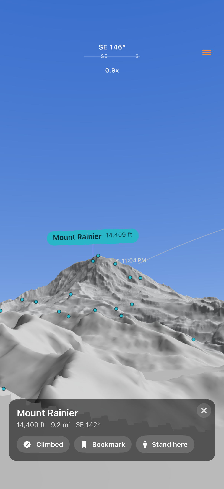
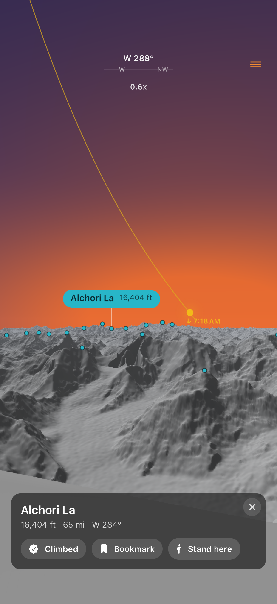
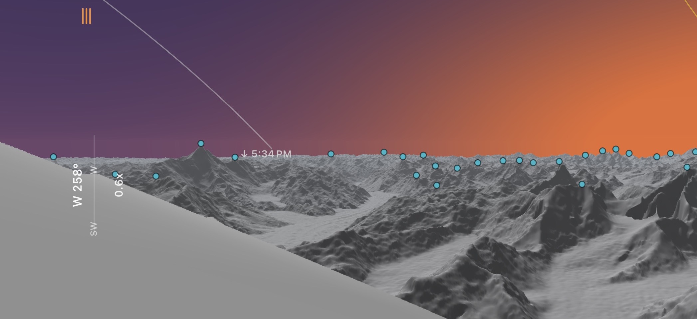

Every peak, named.
Every sky, in motion.
Stand anywhere on Earth and see the real mountains around you — raymarched live from real elevation data, every summit labeled, the sun, moon and stars tracing the true sky overhead.

- No API key
- No account
- Works fully offline
- SRTM 30 m elevation
- OpenStreetMap peaks
Stand on any summit.
Name the whole skyline.
Peak labels are projected pixel-accurately onto the real rendered terrain — name and elevation, leader lines, smart decluttering. Tap any summit for its details, or “Stand on this peak” to teleport your eye straight to it.
- Millions of named summits from keyless OpenStreetMap queries, cached per region.
- Search the directory — a teal marker points to any off-screen peak with its distance.
- Keep personal Climbed and Bookmarks lists.

The real sky, in motion — computed on your device.
Sun and moon day-path arcs sweep over the terrain and slip behind the ridges, tagged where they cross the skyline. The moon is drawn as its true lit limb; 62 named bright stars, thousands of procedural ones, the planets and the Milky Way all come from astronomical algorithms — no network required.

One quiet, capable window onto the whole horizon.
From live GPU terrain to a pocket planetarium and full offline maps — every feature works without an account, a key, or a connection.
Live GPU terrain
A Metal raymarcher bakes a 16K, 360° equirectangular panorama of real relief, then samples it every frame as you look around.
Peak labels & search
Names and elevations pinned to summits, a searchable directory, and a direction marker for anything beyond the frame.
On-device astronomy
Sun, moon, planets, named stars and the Milky Way — every position computed locally, drawn correctly behind the terrain.
Time scrubber
Pick a date and slide through the day to move the whole sky. Terrain stays lit; only the heavens re-light.
AR overlay
Cycle 3D, AR, Edges and Points to drop the terrain, ridge lines or labels straight onto your live camera.
Offline regions
Frame any area on the map and download its tiles. Render whole ranges with zero connection, reference-counted to save space.
Teleport anywhere
Drop a viewpoint on a hybrid 3D map to stand on any point on Earth — or snap back to your GPS location instantly.
Your peak lists
Mark summits as climbed, bookmark the ones you want, and they follow you across every viewpoint.
Keyless by design.
Real global elevation comes from the public AWS SRTM mirror; peak names from OpenStreetMap. There's no key embedded and nothing to rate-limit per user — which is exactly what makes it free to run and genuinely shippable.
Real 30 m topography
SRTM1 elevation with two-tier near/far rendering, plus Earth-curvature drop and atmospheric refraction so distant ridgelines sit exactly where they really do.
Nothing to sign up for
No account, no login, no per-user quota. Open the app and the mountains around you are already drawing.
Yours, offline
Download any region once and it renders with no connection — and reopens to your last viewpoint the moment you launch.
Point your phone at the range.
We'll name it.
A 360° topographic window onto the whole horizon — live, labeled, celestial, and offline. iPhone, iOS 17+.